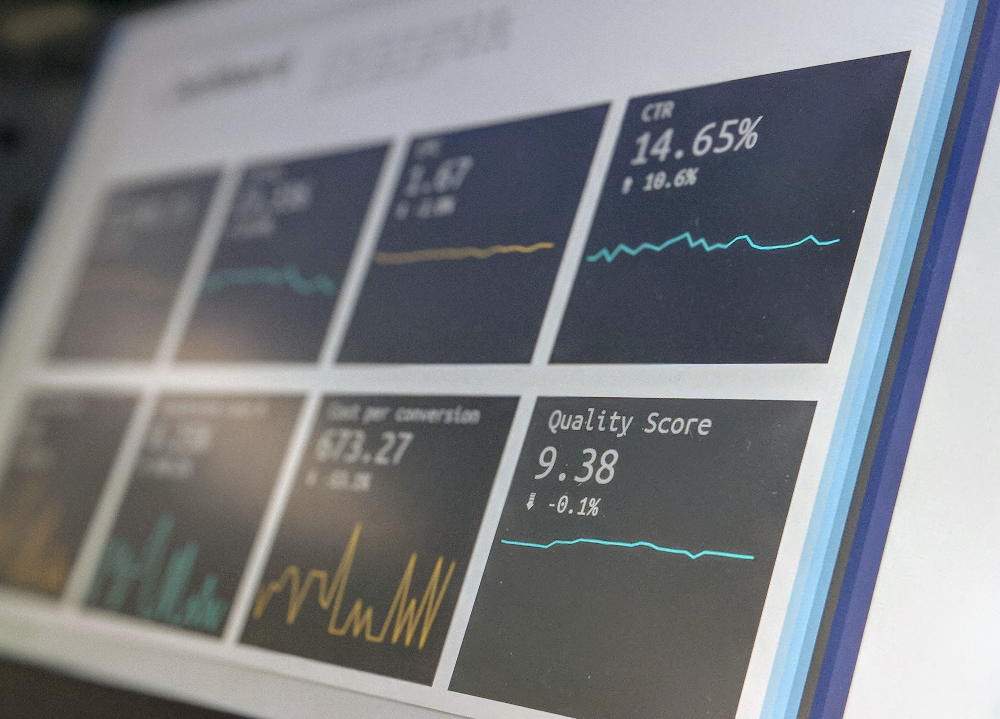

Linguagens de Programação e Banco de Dados
- Python com foco em análise de dados.
- Web scraping com Python.
- SQL para extração de dados.
- R para modelagem estatística.
- Banco de Dados SQLite, Postres, MySQL, Oracle, MongoDB e Cassandra.
Sou formada em Estatística.
Atualmente, estudo projetos pessoais sobre Ciência de Dados, para adquirir experiência na solução de problemas de negócio e domínio sobre as ferramentas de análise de dados.
Estou buscando uma oportunidade de trabalhar profissionalmente como Cientista de Dados para melhorar a tomada de decisão da empresa, através da construção de soluções usando dados.
Construção de solução de dados para problemas de negócio, próximos dos desafios reais das empresas, utilizando dados públicos de competições de Ciência de Dados, onde eu abordei o problema desde a concepção do desafio de negócio até a publicação do algoritmo treinado em produção, utilizando ferramentas de Cloud Computing.
Rotinas de atualização de relatórios e métricas para análises orçamentárias, utilizando ferramentas de análise de dados, Power BI e Qlik Sense.
Processamento de dados e tabelas da base de dados da Pesquisa de Emprego e Desemprego (PED-DF) para produção de boletins mensais e anuais. Uso do software SPSS base para processamento das informações, apresentação de gráficos e tabelas no software Excel.

Eu usei Python, Estatística e técnicas não-supervisionadas de Machine Learning para segmentar um grupo de clientes com base em suas características de performance de compra, a fim de selecionar grupo de clientes para formar um programa de Fidelidade com o objetivo de aumentar a receita da empresa. E o resultado dessa solução, caso fosse implementada, seria de R$ 15MM de dólares de receita anual.

Identificação de imóveis abaixo do preço médio de venda e definição do preço ideal de revenda, a partir de uma análise exploratória de dados em Python.
Sinta-se à vontade para entrar em contato: